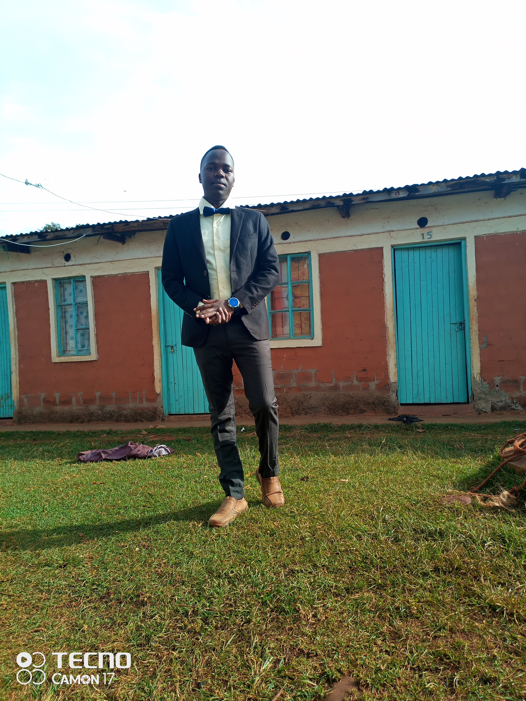
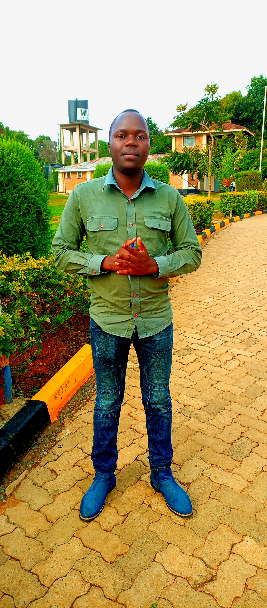

About Me
My High School Life

Welcome! I'm Julius, a passionate web developer with expertise in SQL, PHP, and delivering online services tailored to the needs of learners and individuals alike. My journey in technology began in 2017 when I joined Meteitei Boys High School, where I embraced my love for computers. I took computer studies as one of my subjects, learning the fundamentals of programming, web design, and database management. The knowledge I gained during those formative years laid the groundwork for my future career.
My University Story
After completing high school, I enrolled at the University of Eldoret, where I pursued a degree in Computer Science. This experience allowed me to deepen my understanding of programming languages, software development, and project management. It was during my time at university that I honed my skills in web development, building projects that aimed to address real-world challenges.
Remaining Story
Today, I continue to work on exciting projects that enhance online service delivery, helping businesses and individuals navigate the digital landscape. My goal is to create impactful solutions that improve efficiency and accessibility for users. I am committed to lifelong learning and staying updated with the latest trends in technology to provide the best services possible.